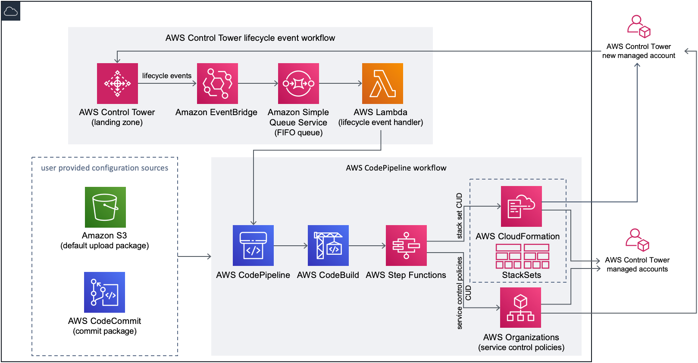
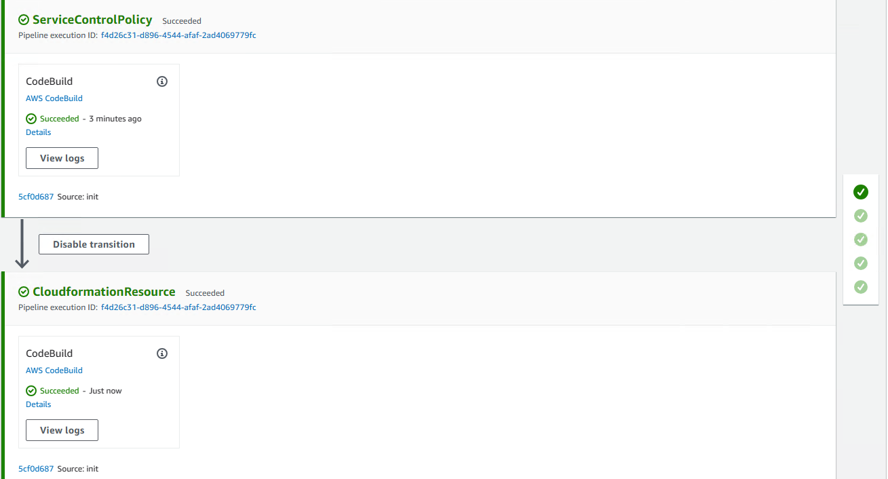
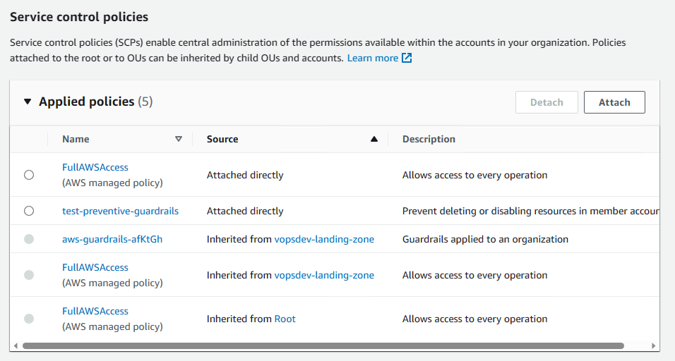
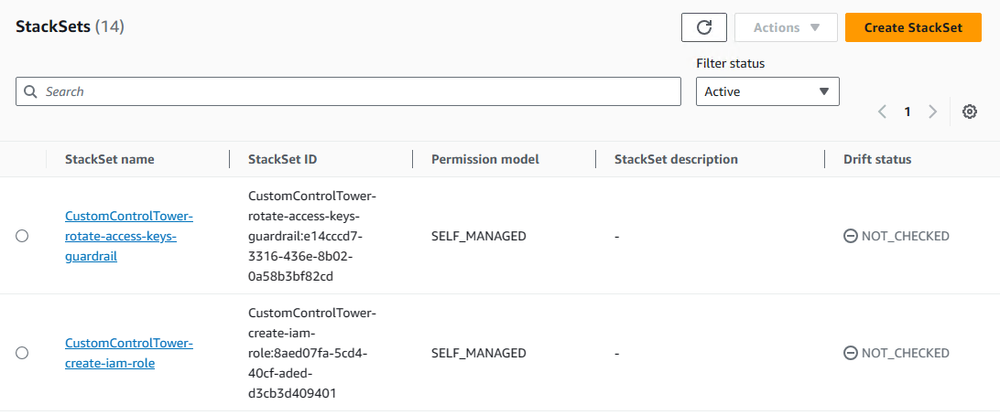
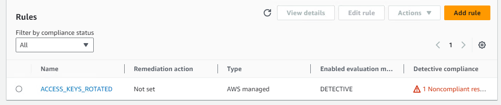
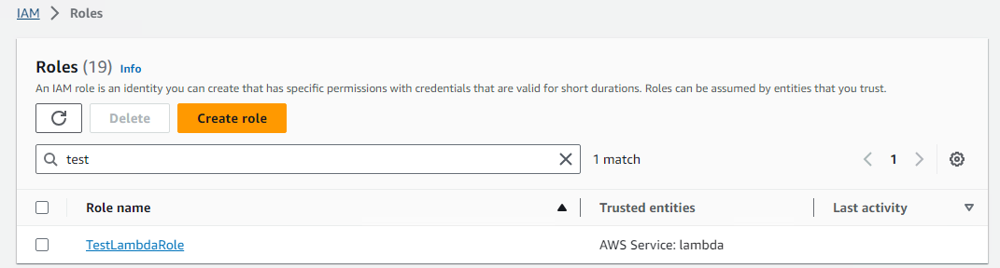

从 AWS Landing Zone 迁移至 Control Tower 2: 重建定制资源
AWS Control Tower 定制化有 CfCT (customization for control tower) 和 AFT (Account Factory for Terraform) 的方式. 这里将介绍如何使用 CfCT 方式为 Control Tower Landing Zone 添加资源.
对比 CfCT 和 ALZ 自定义基线资源
通过 CfCT 可以为 Control Tower Landing Zone 添加 preventive/detective control 和其他资源. 其中 preventive control 通过 service control policy 的 json 来定义. 而 detective control 和其他资源则通过 cloudformation stackset 来定义.
Control Tower 一共有三种 control: preventive control 由 service control policy 实现, detective control 由 config rule 实现, proactive control 由 cloudformation hook 实现.
CfCT 定制化配置的目录结构如下: 1
2
3
4
5
6
7
8.
├── manifest.yaml # tempates 的输入参数直接写在这里, 不再需要 parameters 目录了
├── policies/ # SCP policy jsons
│ ├── xxx.json
│ └── yyy.json
└── templates/ # cloudformation stacksets
├── aaa.template
└── bbb.template
如果熟悉 AWS Landing Zone 的定制化配置, 可以发现这个目录结构几乎完全一致. ALZ 的 stackset 输入参数需要写入 json 文件放到一个单独的 parameters 目录结构中. 而 CfCT 简化了这部分, 可以将输入参数直接写在 manifest.yaml 中, 不再需要 parameters 目录.
下图来自 AWS CfCT 官方文档

从这里也可以看到其基本架构/实现原理和 ALZ 也是类似, 都是通过 codepipeline 触发 step functions 创建 stackset 或者 scp.
部署 customizations-for-aws-control-tower 模板
下载 customizations-for-aws-control-tower.template, 使用这个模板文件创建 cloudformation stack, 来生成 CfCT 所需要的基础资源:
- codebuild
- codepipeline
- event bridge rule
- lambda
- sqs queue
- s3 bucket
- step function
输入参数中将 AWS CodePipeline Source 从默认的 AWS S3 改为 AWS CodeCommit, 使得将来可以通过配置代码的变更来触发流水线.
编写并提交资源定义清单
从 AWS Codecommit 中将 custom-control-tower-configuration 项目 clone 下来, 添加自定义配置. 这里用一个简单的例子示例如何添加 preventive control + detective control + IAM role 资源.
1 | cd custom-control-tower-configuration |
manifest.yaml 文件内容 1
2
3
4
5
6
7
8
9
10
11
12
13
14
15
16
17
18
19
20
21
22
23
24
25
26
27
28
29
30
31
32
33
34
35
36
37
38
39
region: us-west-2
version: 2021-03-15
resources:
- name: test-preventive-guardrails
description: Prevent deleting or disabling resources in member accounts
resource_file: policies/preventive-guardrails.json
deploy_method: scp
deployment_targets:
organizational_units:
- vopsdev-landing-zone:department
- vopsdev-landing-zone:production
- vopsdev-landing-zone:test
- name: create-iam-role
resource_file: templates/describe-regions-iam-role.template
deploy_method: stack_set
deployment_targets:
organizational_units:
- vopsdev-landing-zone:department
- vopsdev-landing-zone:production
- vopsdev-landing-zone:test
regions:
- us-west-2
- name: rotate-access-keys-guardrail
resource_file: templates/access-keys-rotated.template
parameters:
- parameter_key: maxAccessKeyAge
parameter_value: '24'
deploy_method: stack_set
deployment_targets:
organizational_units:
- vopsdev-landing-zone:department
- vopsdev-landing-zone:production
- vopsdev-landing-zone:test
regions:
- us-west-2
- 各个资源会进一步使用 resource_file 引用其定义清单文件: scp 定义保存在 policies 目录下, stackset 保存在 templates 目录下. 实际上 resource_file 还可以引用保存在 s3 上的文件.
- deploy method 有 scp 和 stackset 两种. preventive control 使用 scp, detective control 和其他资源使用 stackset
- deoployment_targets 除了指定 organizational_units 外还可以指定 accounts
- region 指定 stackset 资源需要往那些 region 创建 stack instance. 对于全局资源, 例如 IAM role, 只需要在 home region 创建.
policies/preventive-guardrails.json 是一个 SCP 的 json 定义文件. 它将创建用户定制的 preventive control 来阻止对某些资源的特定操作: 1
2
3
4
5
6
7
8
9
10
11
12
13
14
15
16
17
18
19
20
21
22
23
24
25
26
27
28
29
30
31
32
33
34
35
36{
"Version": "2012-10-17",
"Statement": [
{
"Sid": "GuardPutAccountPublicAccessBlock",
"Effect": "Deny",
"Action": "s3:PutAccountPublicAccessBlock",
"Resource": "arn:aws:s3:::*"
},
{
"Sid": "GuardEMRPutBlockPublicAccess",
"Effect": "Deny",
"Action": "elasticmapreduce:PutBlockPublicAccessConfiguration",
"Resource": "*"
},
{
"Sid": "GuardGlacierDeletion",
"Effect": "Deny",
"Action": [
"glacier:DeleteArchive",
"glacier:DeleteVault"
],
"Resource": "arn:aws:glacier:*:*:vaults/*"
},
{
"Sid": "GuardKMSActions",
"Effect": "Deny",
"Action": [
"kms:DeleteAlias",
"kms:DeleteImportedKeyMaterial",
"kms:ScheduleKeyDeletion"
],
"Resource": "*"
}
]
}
templates/access-keys-rotated.template 是一个 stackset 定义文件. 它将创建用户定制的 detective control (即 config rule) 来检查未定期轮滚的密钥: 1
2
3
4
5
6
7
8
9
10
11
12
13
14
15
16
17
18
19
20
21
AWSTemplateFormatVersion: '2010-09-09'
Description: Checks whether the active access keys are rotated within the number of days specified in maxAccessKeyAge.
Parameters:
maxAccessKeyAge:
Type: 'String'
Description: 'Maximum number of days within which the access keys must be rotated. The default value is 90 days.'
Resources:
CustomConfigRule:
Type: AWS::Config::ConfigRule
Properties:
ConfigRuleName: ACCESS_KEYS_ROTATED
Description: Custom Config Rule - Checks whether the active access keys are rotated within the number of days specified in maxAccessKeyAge
InputParameters:
maxAccessKeyAge : !Ref maxAccessKeyAge
Source:
Owner: AWS
SourceIdentifier: ACCESS_KEYS_ROTATED
Scope:
ComplianceResourceTypes: []
templates/describe-regions-iam-role.template 是一个 stackset 定义文件. 它将创建一个定制资源 (IAM role): 1
2
3
4
5
6
7
8
9
10
11
12
13
14
15
16
17
18
19
20
21
22
23
24
25
26
27
28
29
30
31Resources:
TestLambdaRole:
Type: AWS::IAM::Role
Metadata:
cfn_nag:
rules_to_suppress:
- id: W28
reason: "for demo"
- id: F3
reason: "for demo"
- id: W11
reason: "for demo"
Properties:
AssumeRolePolicyDocument:
Version: '2012-10-17'
Statement:
- Effect: Allow
Principal:
Service: lambda.amazonaws.com
Action: sts:AssumeRole
Path: /
RoleName: TestLambdaRole
Policies:
- PolicyName: DescribeRegions
PolicyDocument:
Version: '2012-10-17'
Statement:
- Effect: Allow
Action:
- ec2:DescribeRegions
Resource: '*'
测试 CfCT 定制流水线和资源可用性
提交配置代码, 推送到 Codecommit 后即可触发 Custom-Control-Tower-CodePipeline 流水线. 等其执行成功:

然后可以检查新定义的资源是否创建成功. 到 Organization 下指定的 OU 上检查定制 SCP:

在 Cloudformation 中可以看到相关的 stacksets:

到目标账户下查看定制的 config rule:

到目标账户下查看定制的 IAM role
